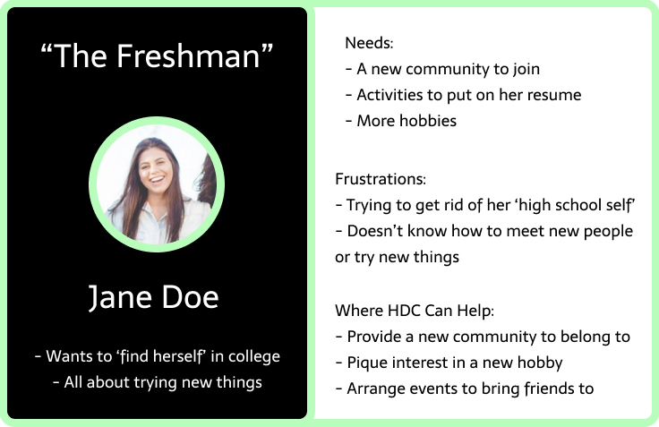
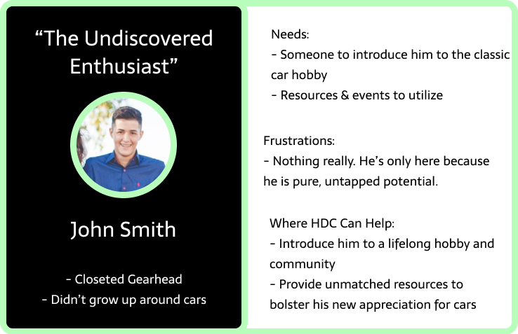
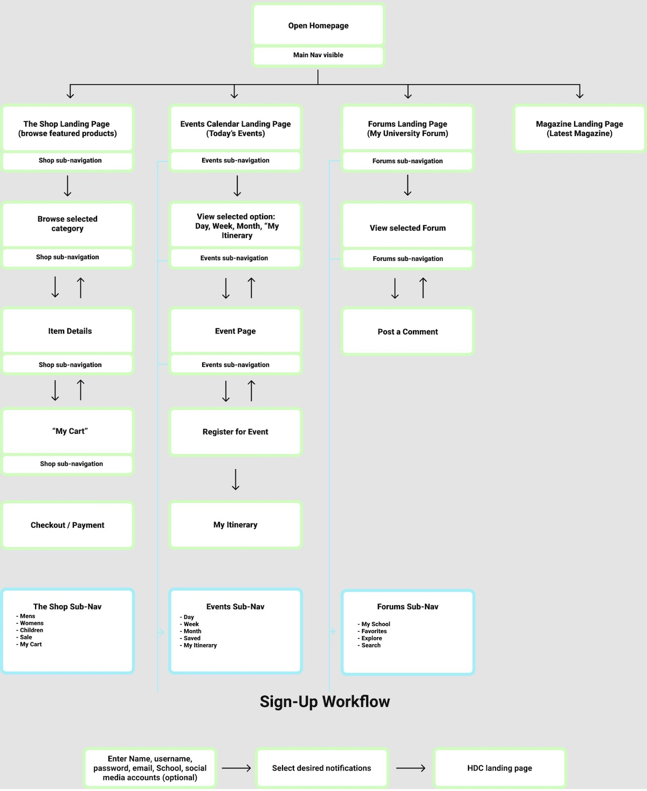
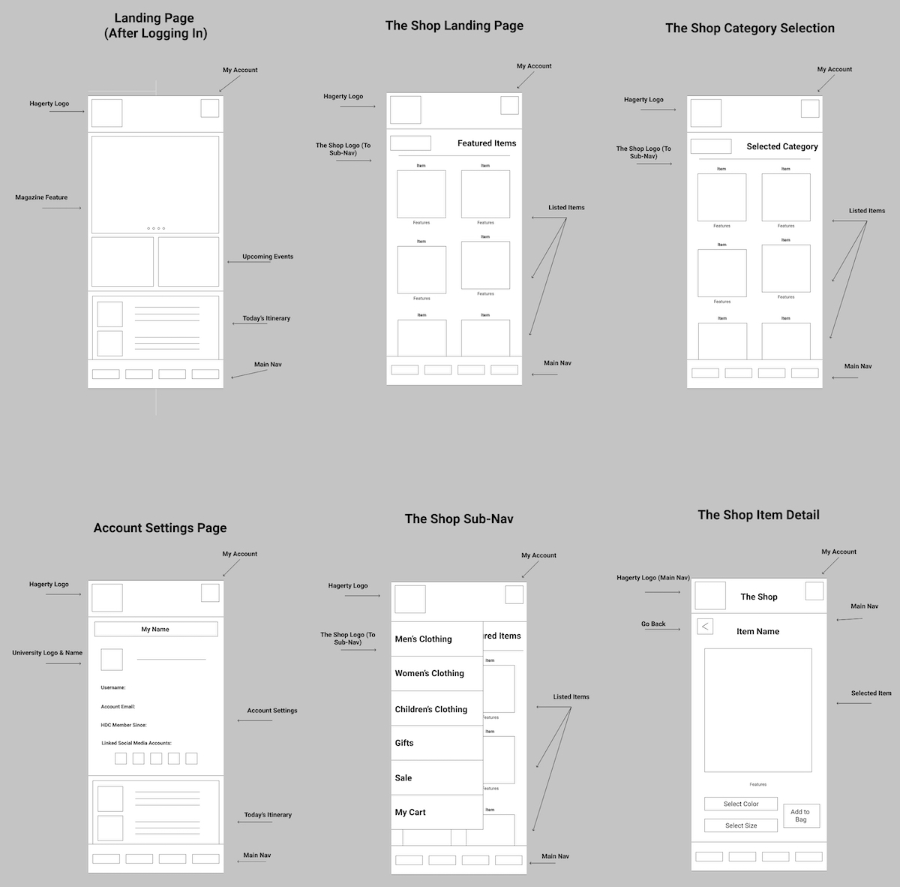
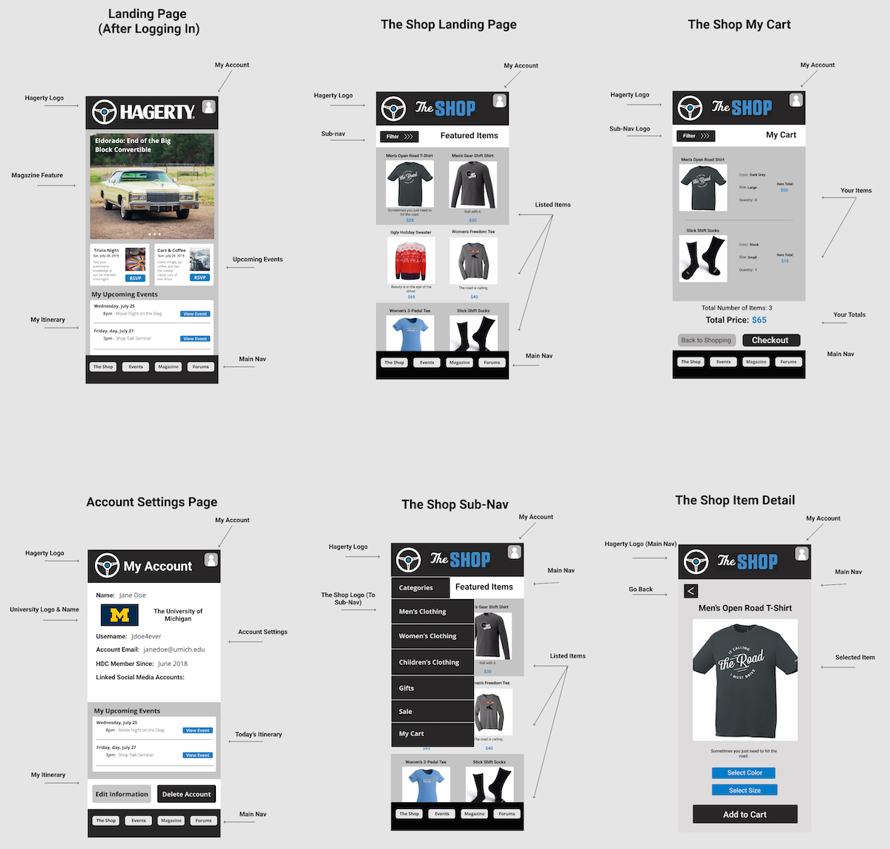

HDC on Campus
 Client
Client
Hagerty
 Role
Role
Media Content Intern
 Duration
Duration
May 2019 - August 2019
Skills: UX Design, Persona Creation, Wireframing, Prototyping, Figma
Problem:
Hagerty is seeking to expand membership for their Driver's Club, HDC. While they are steadily gaining membership in older populations, younger generations are not being represented as well. My team's goal is to find a way to appeal to college students and make them want to become full-time HDC members by the time they graduate.
Research:
In gathering members across various locations, we decided to create a centralized app to standardize the HDC College community and provide access to all resources that an HDC membership provides. To determine what our app should include, I created a few personas to focus the design direction towards real users.


With our user personas in mind, the next step was to create goals and requirements for the app. This list of central functions and features would drive the design process and ensure that we catered to our customers.
Goals
- Provide a centralized space for all HDC on Campus features
- Facilitate the transition from HDC on Campus to full HDC membership
- Allow access to The Shop and other Hagerty core brands
- Organize events in a calendar for HDC on Campus events
- Host forums for discussions based on both geographic location and theme
- Post digital version of Hagerty's magazine
Work Flows:
Once we determined our goals and main features, I went detailed the workflows for how each feature of the app would function. This made sure that users could accomplish their goals with minimal effort and through intuitive models.
Sketches:
Next, I developed sketches and wireframes to figure out an effective way to display all necessary information for each page a user could visit. I used a consistent navigation bar along the bottom of the screen so users could easily select buttons with their thumb. I also focused on sharing more images rather than words to produce an attractive aesthetic.
High-Fidelity Frames:
Finally, I created high-fidelity mockups for the main pages in the application. I utilized good user interface design practices, including Gestalt principles of orientation and similarity to allow users to easily understand how information on each page is related. With consistent branding throughout the app, the HDC on Campus prototype seamlessly extends the Hagerty brand and community to college students.
Solution:
Create a centralized connection between Hagerty Driver's Club on Campus as well as full-time HDC members in the form of an accessible mobile application.